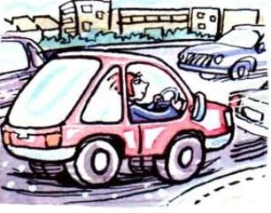

Sarah is in her car. She is on her way to work.
She's driving to work.
(= She is driving ...)
This means she is driving now, at the time of speaking.
am/is/are + -ing is the present continuous:
I
am
(=I'm)
driving
he/she/it
is
(=he's etc.)
working
we/you/they
are
(=we're etc.)
doing
In negative sentenes we use:
I'm not driving
he isn't working or he's not working
we are't doing or we 're not doing
In questions we use:
am I driving is she workingare they doing
B I am doing something = I'm in the middle of doing it; I've started doing it and I haven't finished yet
+ Please don't make so much noise. I'm trying to work.
+ 'Where's Mark?' 'He is having s shower'.
+ Let's go out now. It isn't raining any more.
The action is not necessarily happening at the time of speaking. For example:
Steve is talking to a friend on the phone. He says:
I'm reading a really good book at the moment. It's about a man who ...
Steve is not reading the book at the time of speaking.
He means that he has started it, but has not finished it yet.
He is in the middle of reading it.
+ Kate wants to work in Italy, so she's learning Italian. (but
perhaps she isn't learning Italian at the time of speaking)
+ Some friends of mine are building their own house. They hope to finish it next summer.
C We use the present continuous when we talk about things happening in a period around now (for
example, today/this week/this evening etc.):
+ 'You're working hard today.' 'Yes, I have a lot to do.' (not 'you work hard today')
+ 'Is Susan working this week?' 'No, she's on holiday.'
D We use the present continuous when we talk about changes happening around now:
+ The population of the world is rising very fast. (not 'rises')
+ Is your English getting better? (not 'does your English get better')